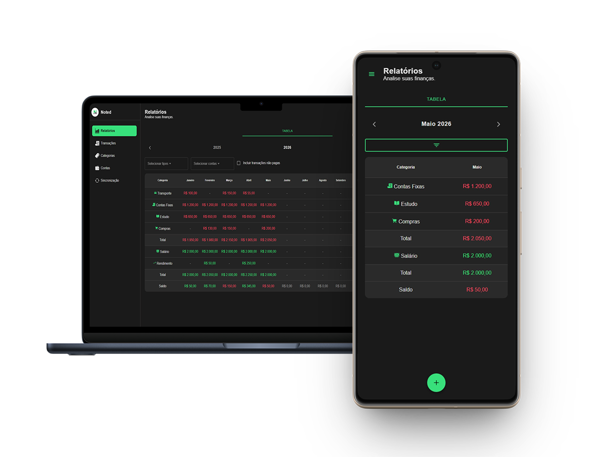

O controle financeiro que respeita sua privacidade
Gerencie seus gastos com total segurança. O Noted reúne a agilidade de um aplicativo moderno com o poder que você já conhece.
- Offline-first: Seus dados ficam apenas com você. Zero dependência de servidores na nuvem.
- Multiplataforma: Sincronize tudo rapidamente via rede local entre o seu celular e o computador.
- Privacidade total: Não exigimos cadastros, e-mails ou qualquer informação pessoal.
- Familiar: Uma interface limpa e direta, pensada para quem já está acostumado com planilhas.

Baixar para Windows (.exe)Versão Alpha: O aplicativo está em fase de testes (sujeito a bugs). O navegador ou o Windows Defender podem exibir um alerta de segurança na instalação devido à ausência temporária de um certificado digital de desenvolvedor.
Gestão no seu bolso
Ainda não tem o aplicativo no celular? Baixe agora na loja oficial para gerenciar seus gastos também em seu dispositivo móvel.
Em breve na Google Play